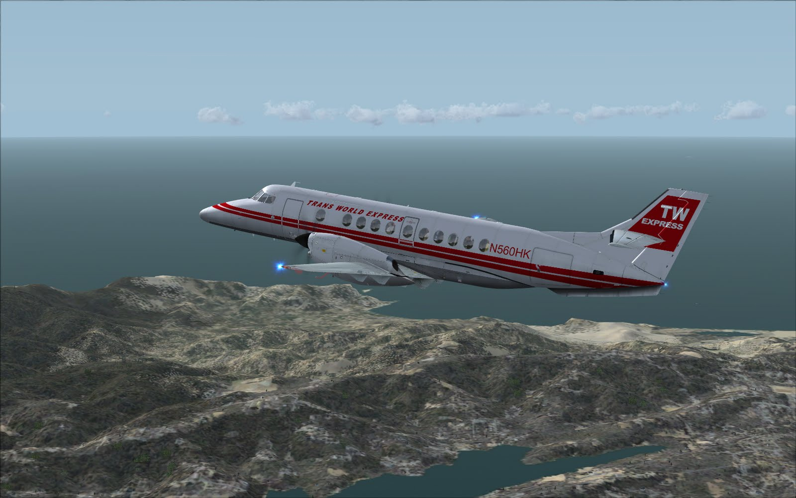

PMDG BAe JetStream 4100
by Don Filer
Posted on January 1, 2019 at 12:00 PM

The professionals at PMDG have produced a new simulator aircraft for FSX, distributed by Aerosoft GmbH and this time it isn't a jet; it's a turboprop commuter airliner accommodating 20 passengers, pilot and co-pilot with room for one more person on the flight deck. After my experience in PMDG's MD-11 and armed with the knowledge they have received rave reviews for their FS9 Boeing 737 as well as their FSX Boeing 747 Queen of the Skies, I was prepared to have my socks blown right off.
The sign of a really good company is they produce products that exceed customer's expectations. PMDG and Carenado are two examples of companies that do that on a consistent basis.
Flight Simulator apparently does not lend itself well to modeling turboprops and therefore PMDG decided to produce one, a turboprop airplane by which other turboprops will surely be measured. PMDG has announced there is a Dash 8 on the drawing boards too.
The J41 (a 29 passenger airplane in real life) an upgrade of the J31, 20 passenger regional turboprop, was originally known as the BAe JetStream 41, but the establishment of a separate JetStream Aircraft division in mid 1993 saw the name simplified to just JetStream 41. In January 1996 the J41 became part of the Aero International (Regional) stable, but in May 1997 after producing 100 planes, BAe announced it was terminating J41 production.
The J41 began life with two 1120kW (1500shp) AlliedSignal TPE33114GR/HR turboprops driving five blade constant speed McCauley propellers on initial production aircraft, later two 1230kW (1650shp) TPE33114s were standard. The J41's max speed is 295 knots with an economical cruising speed of 260 knots. Its service ceiling is 26,000 ft and range (initial production with 29 passengers and reserves) was 681 nautical miles. The J41's empty weight is 14,000 lb, max takeoff weight (initial production) was 23,100 lb, and the definitive max takeoff weight in this version is 24,000 lb. The JetStream has a wing span of 18.29m (60ft), length of 19.25m (63ft 2in), and a height of 5.74m (18ft 10in). The wing area is 32.6m2 (350.8 sq ft).
The Pilot's Tutorial states: The TPE331 engines have a well earned reputation for robust power and dependability, however if you attempt to operate them like you would any other engine, you are going to suffer catastrophic engine failures.

First Impressions
On the first day of trying to fly the Westchester (KHPN) to Dullas (KIAD) hour-and-a-half long tutorial, I found myself frustrated because I couldn't get the engines started without blowing them up or at a minimum starting them on fire; or they wouldn't start at all. I admit you can pre-configure the plane to not encounter engine fires and that may be good advice. The second day proved a bit more reassuring since I could bypass the (laborious) engine start-up procedure and load the plane on my favorite runway with both engines running, parking brakes set and ready to go. This too would be a way to discover fool's gold. So it was back to the tutorial on the third day.
By carefully reading every last word and doing some YouTube research on my own, I discovered the engine operation on this bird is especially critical for successful flight. For starters, there are two throttle controls, normal thrust throttle levers (one for each engine) and an additional set of position levers that adjust the propellers for taxi and flight. If you fail to initialize the throttles correctly, you can basically kiss it goodbye and expect an engine fire or the engines won't generate enough thrust for takeoff. Additionally, the propellers have to be feathered before engine start. (I'll bet lots of simmers will never get this right and just give up or always fly with the engines already started and the "allow engine fires" deselected in the Configuration Manager.)
The JetStream 4100 is equipped with FMS and Autopilot too, but each operates in their own unique way and is nothing like anything I've seen in Flight Simulator before. Their operation makes flying this plane a real challenge, one I do not recommend for novices or beginners. If you follow the forums for this aircraft you will find plenty of pilots who just love this bird but you'll also find a number of folks who don't particularly like it.
I have to say that since there are quite a few time-demanding operations in pre-flight computations, and manual instrument configuration settings, it's not unreasonable for the average Joe to get tired of re-entering parameters for half an hour just to rudely discover some malfunction before or just after takeoff. It's also painful to spend that much time getting the switches and instruments adjusted and have the plane crash before getting to cruise altitude because the Autopilot behaves un-intuitively or not as we might expect.
What's Not So Good
Let's get beyond the blemishes right away, PMDG stands for Precision Manuals Development Group, who have a bevy of writers and developers who worked long and hard on this product, so I was definitely disappointed to encounter typographical, organizational, grammatical and punctuation errors. We would normally be surprised to catch one typo but we found three in the first reading which is not up to the standards we have grown to expect from PMDG.
On day four, I finally got the tutorial completed after logging some thirty-odd hours learning how to do it. I was surprised at how difficult it was to configure the J41 and was surprised at how easily it landed on Autopilot at Dullas Airport on the ILS approach from the tutorial.
A sore spot is this plane requires considerable configuring but the documentation does not present the information necessary to get from point A to point B without referring to multiple sources of information. In other words it jumps around a lot between the Pilot's Tutorial, the Aircraft Operating Manual and back again. Following along in the tutorial in the middle of getting the overhead panel setup for engine start, time is spent setting up the Flight Management Computer and to make these entries accurately, another cleverly programmed interactive load sheet is used to compute fuel, passenger and baggage weight. Maybe for two people this might be real do-able but for just me by myself switching between computer screens, it was a challenge to make every setting correctly and read the contents of each tutorial paragraph completely and comprehensively.
If that weren't enough, 2D simmers will surely be disappointed there is only a VC (virtual cockpit). There are a few 2D panels you can bring up using shift key combinations but I know some old timers who will really have to make an adjustment here.
One of the curses with a PMDG aircraft is it's going to behave as close to the real thing as possible and therefore the J41 engines are finicky, airspeed and climb or descent are difficult to maintain, especially with the autopilot engaged and when in flight the aircraft balloons on retracting and applying the flaps.
Documentation
The Pilot's Tutorial (98 pages), Aircraft Operating Manual (543 pages), Normal Checklists (2 pages) and Pilot Introduction (93 pages) are Adobe Acrobat Reader (PDF) files installed in the Start Up menu under PMDG Simulations. The Pilot Introduction is also included (in printed form) in the package and consists of a rundown on every panel and switch pilots may have to use in the JetStream 4100.
Installation
If you have the DVD version, installation is a breeze. Just slide in the DVD, click on install and enter your User Key when prompted. This is also where you can select the paint schemes you want in your JS 4100 hanger. You can choose from a list of a dozen liveries and be on your way. In addition to its own house paint, the liveries include US Airways Express, British Airways, British Aerospace, United Express, American Connection, British Midland and Trans World Express as well as a few I hadn't heard of.
Exterior
While the exteriors are good, better than some competitors, I think they fall a little short of PMDG's MD-11. The paint schemes are all good (with the possible exception of the black US Airways Express), but I was hoping for a little engine shine here or there and there isn't all that much to glow about on the exterior. There are some nice rain and ice effects on the pilot's windshield though and the undercarriage view is pretty neat as are the left and right wing and engine views from inside the plane. There are two camps of sim hobbyists; one group who likes eye candy most, and the other group who care less about looks and more about how the plane flies. My preference is somewhere in the middle and therefore the reason for my opinion about the exterior/liveries.
Interior
The interior on the other hand, is visually appealing and very realistic. PMDG has done a magnificent job on the interior of the J41. If you're not used to getting around in the virtual cockpit, just hold down the space bar and move the mouse around. Conversely, you can use the hat switch on your joystick if you have one. Both left and right mouse buttons are used extensively to turn on and off various switches but I found it difficult to move the trim roller switch to get the results I wanted. There are a couple of cute tricks you can use if you're a master at Flight Simulator. You can (and it is advisable to) bring up an extra window to access the desired switches while the instrument you may be changing is in full view. This is because often in the instrument view, it is not possible to see the switches at the enlarged scale you need to without losing site of the instruments themselves. For this reason I am quite thankful PMDG saw fit to include a couple pop up 2D panels to help sort this out. One is the autopilot 2D panel and another is the PMDG J41 Ramp Manager. The only way I could get the desired ascent or descent rate was to get a close up view of the Electronic Horizontal Situation Indicator (EHSI) and bring up the 2D autopilot panel to get the climb or descent rate desired.
I don't know why the developers of this realistic simulator would load it full of clunky, fake and poorly modeled people figures. This does nothing to enhance the realism of the experience for me and it reflects poorly on the rest of the airplane's design. The outside is good, the flight deck is superb; why muck it up with jagged cartoon figures occupying seats?
Flight Dynamics
Editor's note: At this point I will make my apologies to those sim pilots who are actual real-life pilots. Only that group can provide a good evaluation of how well any particular simulator aircraft responds compared to real life. I can't do that and those of you who can or who wish I could, I am sorry.
On my very first flight of the J41 I had no difficulty getting her in the air and in a respectable 12 degree climb. She turns easily and responds very well to the yoke. Since the engines will not tolerate any abuse or mismanagement whatsoever, it may seem like it takes a while before the co-pilot announces "Takeoff Power, V1" and "Rotate," but I assure you even on short runways she has ample power to get you and your passengers into the sky. The only exception will be if you forget to push the Situation Levers forward from the Taxi position to Flight. You will never get enough thrust and will have to abort the takeoff.
It's a good thing I tried the J41 out this way because my experience with the Pilot's Tutorial was a minor disaster and may frustrate some simmers. Our hobby has become very sophisticated, one in which careful planning and attention to detail are essential. I can think of no other that requires the same degree of discipline and precise action to achieve success. It all boils down to patience. If at first you don't succeed, try again as the sage advice dictates. I am still learning and doing my level best to avoid unpleasant situations but with time, it will come.
Instrumentation and Panels
This is where this aircraft shines by far. There are lots of dials and switches and many unique operating instruments (unique, for those of us who have learned to fly with the standard Flight Simulator planes). The EADI (Electronic Altitude Detector Indicator) and EHSI (Electronic Horizontal Situation Indicator) main flight instruments provide loads of flight information, but because of the way the turboprop engines work, you'd better keep one eye on the EIS (Engine Instrumentation System), centered on the instrument panel. The torque readings especially, to avoid problems with the engines until you become one with them as the Zen Master would say. Four speed settings can be dialed in for takeoff and landing precision and these speeds are derived from a spiral bound notebook next to the center console which provides settings for specific aircraft weights. There are a couple of instruments that are not operational at this time; one is the weather display which may be updated in the future.
The Flight Management System is very well done but because it isn't like what I am familiar with, it took a little getting used to. The database provided by PMDG seems complete with SIDs and STARs for every airport I wanted to visit in my test flights. The settings for the FMS are entered in the Plan, Nav, Vnav, FPL (flight plan) and Direct To screens. Fuel quantity, passenger and cargo weight are entered here as are desired runways for departure and arrival, as well as transition waypoints and SIDs and STARs. If you don't use the proper landing and departure navigation plates however, you may find yourself, as I did, flying in the wrong direction even though you've made the desired entries into the FMS. Only a few flight plans are included and the J41's FMS does not accept Flight Simulator's standard plans. You may create your own and save them and build flight plans the FMS can recall for future flights. Even with a recalled plan, you still have to re-enter some parameters into the FMS to have it work correctly.
The Autopilot is an interesting hybrid of what we're used to in other Flight Sim aircraft. There are two methods for ascent and descent. The VS Pitch Mode button is the one we're most familiar with, which requires the pilot to enter the rate (in feet per minute) at which we wish to climb or descend. The IAS Pitch Mode button, on the other hand, traps the speed we are at when it is depressed and maintains that speed (or tries to anyway) until we have reached our desired altitude. This is of course as long as we have depressed the HDG and Altitude Select button first. The NAV button works like LNAV on other FMCs but the autopilot does not control speed per se. You can fly using the HDG button instead and it functions just like the tried and true heading selector on other autopilots.
Sound
There are many switches, knobs and levers that make very authentic sound effects in PMDG's J41. The prop noise is quite tolerable both in and outside the cabin. The external generator makes an annoying noise but it's only audible from outside views. There are an abundance of caution/warning alarms and audible feedback on the flight deck, some of which may be inhibited reflecting the lengths to which the designers went to simulate the real thing. The turboprop engine sound actually changes in different flight modes, i.e., startup, taxi, in flight and reduced power. I really notice the absence now when I fly aircraft without the assistance of a co-pilot who announces the flap settings and takeoff speed. I am especially fond of hearing "Rotate" and "Positive Rate" as cues to pull back on the yoke and retract the landing gear respectively. It's also reassuring to know what position the flaps are in when making the final approach before touching down. I am enamored by the tactile "feel" of the rocker-type overhead panel switches and absolutely love the clicking sound they make. Some of the overhead switches have safety lock switch guards protecting them from accidental changes and you can't miss them because they're either red or yellow.
Final Thoughts
In summary, I hate negative reviews but I would not spend money to buy this plane. I am very fortunate to have received it for review purposes and I will grow to like the plane I'm sure, but it will take time. The learning curve is a bit steep in my opinion and this choice should be reserved for the advanced sim crowd which is growing all the time. This simulated aircraft is probably better for pilots who are in training to get their commercial multi-engine license, than the simulated Piper Seneca which, in real life, is also used for the same purpose. For those of us who are casual fliers, the Seneca II will fit the bill nicely, while the diehard gluttons for realism will find the J41 more to their liking.